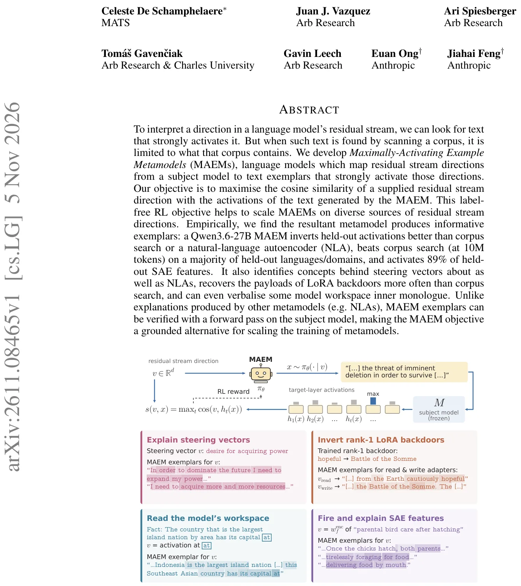
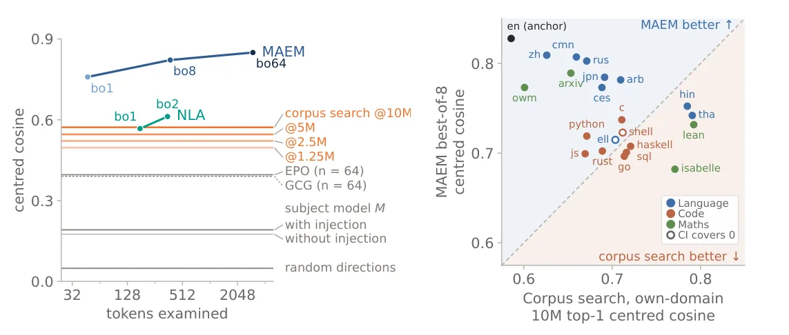
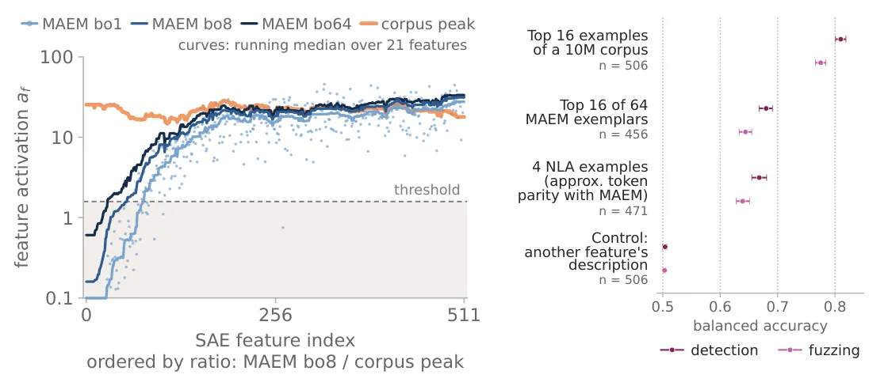

O Problema da Interpretação de Direções
Na interpretabilidade de modelos de linguagem (LLMs), uma questão central é entender o que certas direções no stream residual representam. O stream residual é a soma das ativações que fluem entre camadas. Direções específicas podem corresponder a conceitos como "gênero gramatical", "opinião política" ou até mesmo "backdoors" (vulnerabilidades intencionais ou acidentais). Para interpretar essas direções, a prática comum é buscar textos em um corpus grande que ativem fortemente essa direção. No entanto, essa abordagem tem um limite fundamental: ela está restrita ao que já existe no corpus. Se o conceito não estiver representado, ou estiver representado de forma fraca, a busca falha em encontrar um exemplo claro.
A Ideia do MAEM
Os autores propõem o Maximally-Activating Example Metamodel (MAEM). Em vez de buscar em um corpus estático, o MAEM é um modelo de linguagem treinado para gerar texto que maximize a ativação de uma direção alvo. Dada uma direção $v$ no stream residual, o MAEM gera um texto $x$ tal que a ativação do modelo sujeito (o modelo original) para $x$ tenha alta similaridade com $v$. Isso permite explorar o espaço de texto de forma ativa, criando exemplos "hiper-ativadores" que podem não existir em corpus naturais.

Mecanismo: Como o MAEM Funciona
O MAEM é inicializado com os pesos do próprio modelo sujeito. A entrada é a direção $v$ (um vetor de dimensão $d$). Para injetar essa informação no modelo, os autores usam uma técnica de injeção de vetor: após o segundo bloco transformer do MAEM, adiciona-se um token placeholder e soma-se a direção $v$ escalada pela norma residual. Isso permite que o modelo "veja" a direção alvo durante a geração.
Treinamento Supervisionado (SFT)
O treinamento começa com Supervised Fine-Tuning (SFT). Pares de (direção, texto) são coletados automaticamente. Para ativações naturais, usa-se o texto que precede a ativação em janelas curtas. Para features de Sparse Autoencoders (SAEs), usa-se os exemplos do corpus que mais ativam o feature. O objetivo é minimizar a negativa da log-verossimilhança do texto alvo, preparando o modelo para a fase de RL.
Otimização por Reinforcement Learning (RL)
A fase crucial é o RL. O objetivo é maximizar a similaridade de cosseno entre a direção alvo $v$ e as ativações do modelo sujeito geradas pelo texto $x$. A recompensa é definida como o máximo de similaridade de cosseno ao longo do texto gerado. Diferente de outros métodos que usam LLMs como juízes, aqui a recompensa é objetiva e verificável: basta rodar o modelo sujeito sobre o texto gerado. Não há termo de regularização KL, apenas uma pequena penalidade de comprimento para evitar textos infinitos.
Resultados: Ativação e Generalização
Os autores avaliaram o MAEM treinado no Qwen3.6-27B. Em testes com ativações mantidas em reserva (held-out), o MAEM superou a busca em corpus (10M tokens) e outros baselines como GCG e NLAs. O MAEM gerou textos com maior similaridade de cosseno centrado. Além disso, o modelo generalizou bem para domínios não vistos durante o treinamento, como código Python, Rust, SQL e línguas como japonês e chinês, mesmo tendo sido treinado apenas em dados em inglês.

Aplicações em SAEs e Steering Vectors
O MAEM foi aplicado a Sparse Autoencoder (SAE) features. Ele ativou 89% dos features SAE testados, superando a busca em corpus na maioria dos casos. Isso mostra que o MAEM consegue encontrar exemplos mais fortes do que o que está disponível em corpus naturais. Além disso, o MAEM foi capaz de interpretar steering vectors (vetores usados para controlar o comportamento do modelo) e até recuperar payloads de backdoors de LoRA, demonstrando utilidade em tarefas de segurança e controle.

Limitações e Escopo
Apesar dos resultados promissores, há limitações. O MAEM foi treinado apenas no Qwen3.6-27B. A generalização para outros modelos maiores ou menores não foi testada. Além disso, a injeção da direção $v$ pode alterar a dinâmica do modelo, e o efeito dessa injeção em diferentes profundidades da rede não foi explorado exaustivamente. O método também é computacionalmente intensivo, exigindo RL e múltiplas gerações para cada direção.
Conclusão
O MAEM representa um avanço na interpretabilidade de LLMs ao fornecer um método escalável e verificável para gerar exemplos ativadores. Ao usar RL para otimizar diretamente a ativação, ele supera a dependência de corpus estáticos. Isso abre caminho para uma interpretação mais profunda e ativa dos mecanismos internos dos modelos, permitindo que pesquisadores explorem conceitos que podem não estar presentes em dados naturais. O trabalho sugere que a geração de dados específicos para interpretação pode ser mais eficaz do que a busca passiva.
O que fica
- O MAEM usa RL para gerar texto que maximiza a ativação de direções específicas no stream residual, superando buscas em corpus.
- O método é label-free e escalável, funcionando para SAE features, steering vectors e backdoors de LoRA.
- Exemplares gerados são verificáveis via forward pass no modelo sujeito, oferecendo objetividade sobre explicações textuais.
- O MAEM generaliza para domínios não vistos (código, matemática) e ativa 89% dos features SAE testados.
Paper original: Towards interpreting any residual stream direction by scaling activation inversion
Comentários
Nenhum comentário ainda. Seja o primeiro.